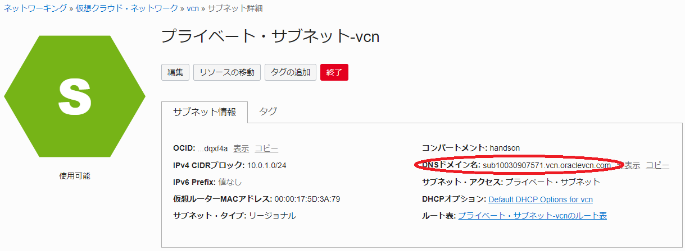
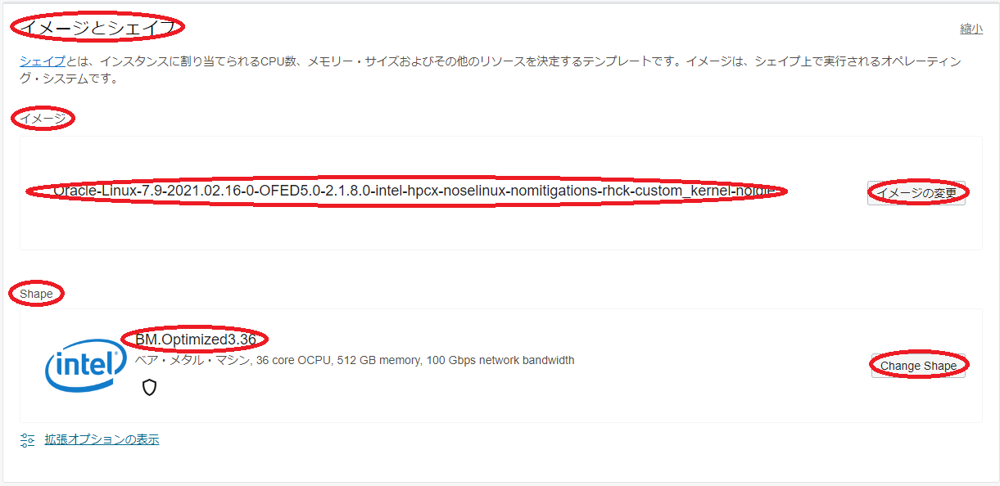
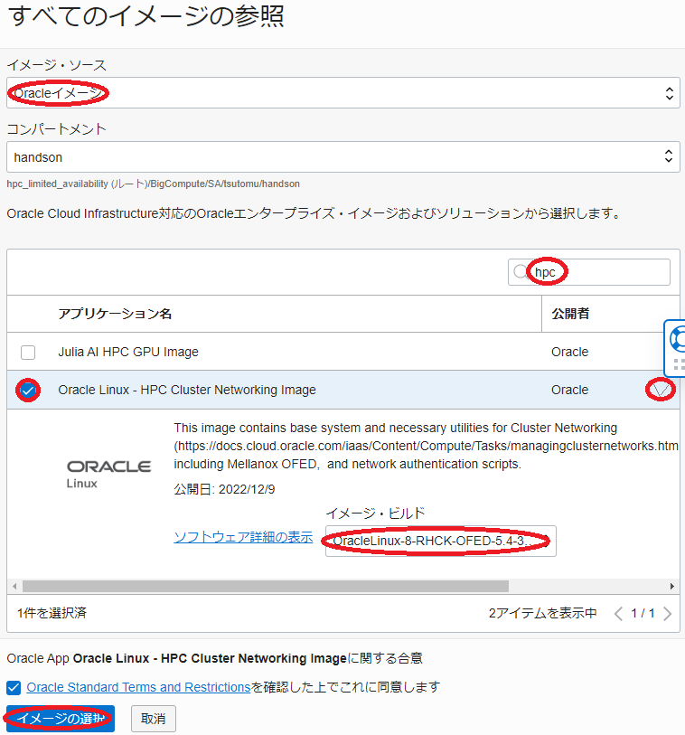

Oracle Cloud Infrastructure（以降OCIと記載）のクラスタ・ネットワークは、以下の特徴からHPCワークロードを実行するHPCクラスタを構築する際の計算ノード間を接続するインターコネクトに最適なサービスです。
- RoCEv2を使用する高帯域・低レイテンシRDMAインターコネクト（MPI通信で最大12GB/sの帯域幅と最小1.5μsのレイテンシ）
- オーバーサブスクリプションの無いフラットなネットワークトポロジーから来る再現性の高いネットワーク特性
このチュートリアルは、HPC向けIntel Ice Lakeプロセッサを搭載する計算ノード（BM.Optimized3.36（※））をクラスタ・ネットワークを使用してノード間接続し、HPCワークロードを実行するためのHPCクラスタを構築する際のベースとなるインフラストラクチャを構築、そのインターコネクト性能を検証します。
※：シェイプ詳細は以下URLを参照
https://docs.oracle.com/ja-jp/iaas/Content/Compute/References/computeshapes.htm#bm-hpc-optimized
このチュートリアルで作成する環境は、ユーザ管理、ホスト名管理、共有ファイルシステム、プログラム開発環境、ジョブスケジューラ等、必要なソフトウェア環境をこの上に整備し、ご自身の要件に沿ったHPCクラスタを構築する際の基礎インフラストラクチャとして利用することが可能です。 なおOCIでは、これらのクラスタ管理に必要なソフトウェアの導入までを自動化するOCIのリソース・マネージャを使用したHPCクラスタ構築自動化ソリューションも利用可能です。この詳細は、本チュートリアルの姉妹編である以下ページ HPCクラスタを構築する を参照ください。
https://oracle-japan.github.io/ocitutorials/intermediates/spinup-hpc-cluster

またこのチュートリアルでは、環境構築後により大規模な計算を実施する必要性が発生することを想定し、既存のクラスタ・ネットワークに計算ノードを追加する方法も学習します。
所要時間 : 約1時間
前提条件 : クラスタ・ネットワークを収容するコンパートメント(ルート・コンパートメントでもOKです)の作成と、このコンパートメントに対する必要なリソース管理権限がユーザーに付与されていること。
注意 : チュートリアル内の画面ショットについては、OCIの現在のコンソール画面と異なっている場合があります。
0. クラスタ・ネットワーク作成事前作業
0-0. クラスタ・ネットワーク作成事前作業概要
クラスタ・ネットワークは、これに接続する計算ノードと共に作成します。
このため、この計算ノードをTCP接続するVCNと、インターネットから直接アクセス出来ないプライベートサブネットに通常接続される計算ノードにログインする際の踏み台となるbastionノードを、クラスタ・ネットワーク作成前に予め作成しておく必要があります。
本章は、これらクラスタ・ネットワーク作成の前提となるリソースを作成します。
0-1. VCN作成
本章は、計算ノードをTCP接続するVCNを作成します。 VCNの作成は、以下チュートリアルページ クラウドに仮想ネットワーク(VCN)を作る の手順通りに実行し、
https://oracle-japan.github.io/ocitutorials/beginners/creating-vcn
以下のリソースを作成します。
- VCN（10.0.0.0/16）
- パブリックサブネット（10.0.0.0/24）
- プライベートサブネット（10.0.1.0/24）
- インターネット・ゲートウェイ（パブリックサブネットにアタッチ）
- NATゲートウェイ（プライベートサブネットにアタッチ）
- サービス・ゲートウェイ（プライベートサブネットにアタッチ）
- ルート表 x 2（パブリックサブネットとプライベートサブネットにアタッチ）
- セキュリティリスト x 2（パブリックサブネットとプライベートサブネットにアタッチ）
このVCNは、セキュリティリストで以下のアクセス制限が掛けられています。
- インターネットからのアクセス：パブリックサブネットに接続されるインスタンスの22番ポート（SSH）に限定
- インターネットへのアクセス：インターネット上の任意のIPアドレス・ポートに制限なくアクセス可能
0-2. bastionノード作成
本章は、計算ノードにログインする際の踏み台となるbastinノードを作成します。 bastionノードの作成は、以下チュートリアルページ インスタンスを作成する の手順を参考に、
https://oracle-japan.github.io/ocitutorials/beginners/creating-compute-instance
ご自身の要件に沿ったインスタンスを、先の手順でVCNを作成したコンパートメントとパブリックサブネットを指定して作成します。本チュートリアルは、以下属性のインスタンスをbastionノードとして作成します。
- イメージ : Oracle Linux 7.9
- シェイプ : VM.Optimized3.Flex（1 OCPU）
- SSHキーの追加 : bastionノードへのログインで使用するSSH秘密鍵に対応する公開鍵
次に、このbastionノード上でSSHの鍵ペアを作成します。このSSH鍵は、bastionノードからクラスタ・ネットワークに接続する計算ノードにログインする際に使用します。 先のチュートリアル インスタンスを作成する に記載のインスタンスへの接続方法に従いbastionノードにopcユーザでSSHログインし、以下のコマンドでSSH鍵ペアを作成、作成された公開鍵を後のクラスタ・ネットワーク作成手順で指定します。
> ssh-keygen
Generating public/private rsa key pair.
Enter file in which to save the key (/home/opc/.ssh/id_rsa):
Enter passphrase (empty for no passphrase):
Enter same passphrase again:
Your identification has been saved in /home/opc/.ssh/id_rsa.
Your public key has been saved in /home/opc/.ssh/id_rsa.pub.
The key fingerprint is:
SHA256:2EvR7FXtEYAsDknJG1oREie1kv2r1PN3OYrYCP/Xlyg opc@bast
The keys randomart image is:
+---[RSA 2048]----+
| +=*= . ..oo.|
| *B.+ o . ..|
| ooo* + . ..|
| ..+.+ . .|
| . S.. |
| .... |
| o.+ o o|
| . + *E.+ *.|
| . +.=+.o o|
+----[SHA256]-----+
> cat .ssh/id_rsa.pub
ssh-rsa AAAAB3NzaC1yc2EAAAADAQABAAABAQD0TDo4QJPbXNRq/c5wrc+rGU/dLZdUziHPIQ7t/Wn+00rztZa/3eujw1DQvMsoUrJ+MHjE89fzZCkBS2t4KucqDfDqcrPuaKF3+LPBkgW0NdvytBcBP2J9zk15/O9tIVvsX8WBi8jgPGxnQMo4mQuwfvMh1zUF5dmvX3gXU3p+lH5akZa8sy/y16lupge7soN01cQLyZfsnH3BA7TKFyHxTe4MOSHnbv0r+6Cvyy7Url0RxCHpQhApA68KBIbfvhRHFg2WNtgggtVGWk+PGmTK7DTtYNaiwSfZkuqFdEQM1T6ofkELDruB5D1HgDi3z+mnWYlHMNHZU5GREH66acGJ opc@bast
次に、以降作成するGPUノードのDNS名前解決をイニシャルホスト名で行えるようにするため、/etc/resolv.confファイルのsearch行に、先に作成したプライベートサブネットのDNSドメイン名を以下のように追加します。
> diff /etc/resolv.conf_org /etc/resolv.conf
7c7
< search vcn.oraclevcn.com sub11010929110.vcn.oraclevcn.com
---
> search vcn.oraclevcn.com sub11010929110.vcn.oraclevcn.com sub10030907571.vcn.oraclevcn.com
なおプライベートサブネットのDNSドメイン名は、OCIコンソール上で当該プライベートサブネットの サブネット詳細 メニューから、以下のように確認することが出来ます。

この修正は、このままではOS再起動により元に戻ってしまうため、以下のコマンドでこの修正が上書きされないようにします。
> sudo chattr -R +i /etc/resolv.conf
1. クラスタ・ネットワーク作成
1-0. クラスタ・ネットワーク作成概要
クラスタ・ネットワークは、その下層にOCIのインスタンス・プールを使用し、インスタンス・プールが持つ同一イメージのインスタンスを複製する機能により、クラスタ・ネットワークに接続する計算ノードを指定ノード数デプロイします。
またインスタンス・プールは、その下層にOCIのインスタンス構成を使用し、インスタンス構成に指定した属性を持つインスタンスを複製します。
OCIのクラスタ・ネットワークに接続する計算ノードは、OS（Oracle Linux 7.9）起動時点でクラスタ・ネットワークに接続するRDMAインタフェースが作成されていないため、デプロイ後の最初のOS起動時のみ実行されるOCIのcloud-initを利用して、この作成を行います。また本チュートリアルでは、計算ノードに使用するBM.Optimized3.36に装備されるNVMeローカルディスクのファイルシステム作成と、計算ノード間通信性能を検証する際に使用するIntel MPIのインストールも、このcloud-initから行います。
以上より、クラスタ・ネットワークの作成は、以下の手順を経て行います。
- cloud-init設定ファイル作成
- インスタンス構成作成
- クラスタ・ネットワーク作成
なおインスタンス・プールは、クラスタ・ネットワークを作成することで自動的に作成されるため、改めて作成する必要はありません。
1-1. cloud-init設定ファイル作成
本章は、cloud-init設定ファイルを作成します。
cloud-initは、主要なクラウドサービスプロバイダーで利用可能なインスタンス初期化のための仕組みで、cloud-initが用意する文法に沿った設定ファイルを作成しこれを指定することで、インスタンスデプロイ後に必要な様々なOSレベルのカスタマイズを適用することが可能になります。
本チュートリアルは、このcloud-initを以下の目的で使用します。
- Intel MPIインストール
- NVMeローカルディスクファイルシステム作成
- firewalld停止
- RDMAインタフェース作成
以下は、本チュートリアルで使用するBM.Optimized3.36用のcloud-init設定ファイルで、OCIコンソールを実行している端末上にテキストファイルで保存します。
#cloud-config
yum_repos:
#
# To install oneAPI package
oneAPI:
name: Intel(R) oneAPI repository
baseurl: https://yum.repos.intel.com/oneapi
enabled: true
gpgcheck: true
repo_gpgcheck: true
gpgkey: https://yum.repos.intel.com/intel-gpg-keys/GPG-PUB-KEY-INTEL-SW-PRODUCTS.PUB
packages:
#
# Install oneAPI Base and HPC Toolkit
- intel-basekit
- intel-hpckit
- intel-oneapi-mpi-2021.3.1.x86_64
runcmd:
#
# Mount NVMe local storage
- parted -s /dev/nvme0n1 mklabel gpt
- parted -s /dev/nvme0n1 -- mkpart primary xfs 1 -1
- mkfs.xfs -L localscratch /dev/nvme0n1p1
- mkdir -p /mnt/localdisk
- echo "LABEL=localscratch /mnt/localdisk/ xfs defaults,noatime 0 0" >> /etc/fstab
- mount /mnt/localdisk
#
# Stop firewalld
- systemctl stop firewalld
- systemctl disable firewalld
#
# Set up RDMA interface
- ifdown ens800f0
- echo "TYPE=\"Ethernet\"" > /etc/sysconfig/network-scripts/ifcfg-ens800f0
- echo "BOOTPROTO=\"none\"" >> /etc/sysconfig/network-scripts/ifcfg-ens800f0
- echo "IPADDR=192.168.0.`ifconfig ens300f0 | head -2 | tail -1 | awk '{print $2}' | awk -F. '{print $4}'`" >> /etc/sysconfig/network-scripts/ifcfg-ens800f0
- echo "NETMASK=255.255.255.0" >> /etc/sysconfig/network-scripts/ifcfg-ens800f0
- echo "DEFROUTE=\"no\"" >> /etc/sysconfig/network-scripts/ifcfg-ens800f0
- echo "PEERDNS=\"no\"" >> /etc/sysconfig/network-scripts/ifcfg-ens800f0
- echo "PEERROUTES=\"no\"" >> /etc/sysconfig/network-scripts/ifcfg-ens800f0
- echo "IPV4_FAILURE_FATAL=\"no\"" >> /etc/sysconfig/network-scripts/ifcfg-ens800f0
- echo "IPV6INIT=\"no\"" >> /etc/sysconfig/network-scripts/ifcfg-ens800f0
- echo "IPV6_FAILURE_FATAL=\"no\"" >> /etc/sysconfig/network-scripts/ifcfg-ens800f0
- echo "NAME=\"System ens800f0\"" >> /etc/sysconfig/network-scripts/ifcfg-ens800f0
- echo "DEVICE=\"ens800f0\"" >> /etc/sysconfig/network-scripts/ifcfg-ens800f0
- echo "ONBOOT=\"yes\"" >> /etc/sysconfig/network-scripts/ifcfg-ens800f0
- echo "NM_CONTROLLED=\"no\"" >> /etc/sysconfig/network-scripts/ifcfg-ens800f0
- ifup ens800f0
このcloud-init設定ファイルのRDMAインタフェース設定は、プライベートサブネットに接続するTCP接続（インターフェース名：ens300f0）用IPアドレスの4フィールド目の値を取得し、この値を4フィールド目に持つ192.168.0.xをクラスタ・ネットワークに接続するRDMAインタフェースのIPアドレスに設定します。
またこのcloud-init設定ファイルは、RDMAインタフェースを設定する際に指定するインタフェース名がBM.Optimized3.36用（ens800f0）になっているため、他のクラスタ・ネットワーク対応のシェイプ（BM.HPC2.36やBM.GPU4.8等）を使用する場合は、使用するシェイプに合わせてRDMAインタフェース名を変更します。
なお、BM.GPU4.8をクラスタ・ネットワークに接続するためのRDMAインタフェースを設定する際のcloud-init設定ファイルは、以下のチュートリアル”GPUクラスタを構築する”にその記載があります。
1-2. インスタンス構成作成
本章は、インスタンス構成を作成します。
インスタンス構成は、インスタンスをデプロイする際のひな型設定で、一度インスタンス構成を作成すると、これを利用して簡単に同じ属性のインスタンスをデプロイすることが出来るようになります。
-
OCIコンソールにログインし、クラスタ・ネットワークをデプロイするリージョンを選択後、 コンピュート → インスタンス構成 とメニューを辿ります。
-
表示される以下画面で、インスタンス構成の作成 ボタンをクリックします。

-
表示される インスタンス構成の作成 画面で、以下の情報を入力し 作成 ボタンをクリックします。なお、ここに記載のないフィールドは、デフォルトのままとします。
3.1 インスタンス構成情報 フィールド
- 名前 ：インスタンス構成に付与する名前
- コンパートメントに作成 ：インスタンス構成を作成するコンパートメント

3.2 インスタンスの作成先のコンパートメント フィールド：クラスタ・ネットワークをデプロイするコンパートメント

3.3 配置 フィールド
- 可用性ドメイン ：クラスタ・ネットワークをデプロイする可用性ドメイン

3.4 イメージとシェイプ フィールド

- イメージ ：Oracle Linux 7 - HPC Cluster Networking Image (イメージの変更 ボタンをクリックして表示される以下 すべてのイメージの参照 サイドバーで イメージ・ソース フィールドに Oracleイメージ を選択し検索フィールドに hpc と入力して表示される Oracle Linux 7 - HPC Cluster Networking Image を選択し イメージの選択 ボタンをクリック）

ここで指定しているイメージは、OCIのマーケットプレースから提供するOracke Linux 7.9をベースに作成されたクラスタ・ネットワークに接続するために必要なソフトウェアが含まれるイメージ（以降 HPCイメージ と呼称）です。
- Shape ：BM.Optimized3.36 (Change Shape ボタンをクリックして表示される以下 すべてのシェイプの参照 サイドバーで ベア・メタル・マシン をクリックして表示される BM.Optimized3.36 を選択し シェイプの選択 ボタンをクリック）

3.5 ネットワーキング フィールド
- プライマリ・ネットワーク ： 先に作成したVCNを選択
- サブネット ：先に作成したプライベートサブネットを選択

3.6 SSHキーの追加 フィールド
- SSHキー ：先にbastionで作成したSSH鍵の公開鍵（ 公開キーの貼付け を選択することで入力フィールドを表示）

3.7 管理 フィールド（以下 拡張オプションの表示 ボタンを選択して表示）

- cloud-initスクリプト ：先に作成したcloud-init設定ファイルを選択（ 参照 ボタンでファイルを選択）

1-3. クラスタ・ネットワーク作成
本章は、既に作成したcloud-init設定ファイルとインスタンス構成を使用して、クラスタ・ネットワークを作成します。
-
OCIコンソールにログインし、クラスタ・ネットワークをデプロイするリージョンを選択後、 コンピュート → クラスタ・ネットワーク とメニューを辿ります。
-
表示される以下画面で、クラスタ・ネットワークの作成 ボタンをクリックします。

-
表示される クラスタ・ネットワークの作成 画面で、以下の情報を入力し クラスタ・ネットワークの作成 ボタンをクリックします。なお、ここに記載のないフィールドは、デフォルトのままとします。
3.1 名前 フィールド：クラスタ・ネットワークに付与する名前

3.2 コンパートメントに作成 フィールド：クラスタ・ネットワークを作成するコンパートメント

3.2 可用性ドメイン フィールド：クラスタ・ネットワークをデプロイする可用性ドメイン

3.3 ネットワーキングの構成 フィールド
- 仮想クラウド・ネットワーク ：先に作成したVCNを選択
- サブネット ：先に作成したプライベートサブネットを選択

3.4 インスタンス・プールの構成 フィールド
- インスタンス・プール名 ：作成されるインスタンス・プールに付与する名前
- インスタンス数 ：デプロイする計算ノードのノード数
- インスタンス構成 ：先に作成したインスタンス構成

-
表示される以下 クラスタ・ネットワーク作業リクエスト 画面で、左上のステータスが プロビジョニング中 と表示されれば、クラスタ・ネットワークと計算ノードの作成が実施されています。

ステータスが 実行中 となれば、クラスタ・ネットワークと計算ノードの作成が完了しています。
2. 計算ノード確認
本章は、デプロイされた計算ノードにログインし、環境を確認します。
2.1. 計算ノードログイン
計算ノードは、プライベートサブネットに接続されており、インターネットからログインすることが出来ないため、bastionノードを経由してSSHログインします。bastionノードから計算ノードへのログインは、計算ノードのイニシャルホスト名を使用します。
計算ノードのイニシャルホスト名は、OCIコンソールで計算ノードをデプロイしたリージョンを選択後、 コンピュート → インスタンス とメニューを辿り、以下のインスタンス一覧からそのイニシャルホスト名を確認します。
またこの画面は、計算ノードのIPアドレスも表示されており、これを使用してbastionからSSHログインすることも可能です。

計算ノードへのログインは、以下のようにbastionからopcユーザでSSHログインします。
> ssh inst-wyr6m-comp
The authenticity of host 'inst-wyr6m-comp (10.0.1.61)' cant be established.
ECDSA key fingerprint is SHA256:z1Hqcm+vNKQLCvqL6t1fqCgqpqo+onshYP7tI1AcwYU.
ECDSA key fingerprint is MD5:0a:86:6f:d3:86:36:d0:7d:74:3e:8c:3f:cd:4c:3a:68.
Are you sure you want to continue connecting (yes/no)? yes
Warning: Permanently added 'inst-wyr6m-comp,10.0.1.61' (ECDSA) to the list of known hosts.
2.2. cloud-init完了確認
cloud-initは、計算ノードが起動してSSHログインできる状態であっても、その処理が継続している可能性があるため、以下コマンドでそのステータスを表示し、 done となっていることでcloud-initの処理完了を確認します。
ステータスが running の場合は、cloud-initの処理が継続中のため、処理が完了するまで待ちます。
> sudo cloud-init status
status: done
2.3. 計算ノードファイルシステム確認
計算ノードは、以下のようにNVMe領域が/mnt/localdiskにマウントされています。
> df -k /mnt/localdisk
Filesystem 1K-blocks Used Available Use% Mounted on
/dev/nvme0n1p1 3748905484 32976 3748872508 1% /mnt/localdisk
3. MPIプログラム実行（2ノード編）
3-0. MPIプログラム実行（2ノード編）概要
本章は、cloud-initからインストールしたIntel MPI Benchmarkを使用し、クラスタ・ネットワークのノード間インターコネクト性能を確認します。
Intel MPI Benchmarkを計算ノード間で実行するためには、mpirunを実行する計算ノード（いわゆるヘッドノード）からIntel MPI Benchmark実行に参加する他の全ての計算ノードに対して、パスフレーズ無しでSSH接続できる必要があります。
またIntel MPIの実行は、これを実行する計算ノード間で必要なポートにアクセス出来る必要があるため、先に作成したプライベートサブネットのセキュリティリストを修正する必要があります。
以上より、本章で実施するIntel MPI BenchmarkによるMPIプログラム実行は、以下の手順を経て行います。
- 計算ノード間SSH接続環境構築
- プライベートサブネットセキュリティリスト修正
- Intel MPI Benchmark Ping-Pong実行
ここでは、2ノードのPing-Pong性能を計測しており、以下性能が出ています。
- 帯域：約12 GB/s（インタフェース物理帯域100 Gbpsに対し96 Gbpsを計測）
- レイテンシ：約1.5 μs
3-1. 計算ノード間SSH接続環境構築
本章は、先にbastionノードで作成したSSH秘密鍵を全ての計算ノードにコピーすることで、全ての計算ノード間でパスフレーズ無しのSSH接続環境を実現します。
まず初めに、先に確認したOCIコンソールのインスタンス一覧を使用し、以下のように全ての計算ノードのイニシャルホスト名を含むファイルをbastion上に作成します。
> cat hostlist.txt
inst-wyr6m-comp
inst-9wead-comp
次にこのファイルを使用し、以下コマンドで全計算ノードにbastionノードのSSH秘密鍵をコピーします。この際、計算ノード1ノード毎に接続確認を求められるため、全てに yes を入力します。
> for hname in `cat hostlist.txt`; do echo $hname; scp -p ~/.ssh/id_rsa $hname:~/.ssh/; done
inst-wyr6m-comp
The authenticity of host 'inst-wyr6m-comp (10.0.1.61)' cannot be established.
ECDSA key fingerprint is SHA256:z1Hqcm+vNKQLCvqL6t1fqCgqpqo+onshYP7tI1AcwYU.
ECDSA key fingerprint is MD5:0a:86:6f:d3:86:36:d0:7d:74:3e:8c:3f:cd:4c:3a:68.
Are you sure you want to continue connecting (yes/no)? yes
Warning: Permanently added 'inst-wyr6m-comp,10.0.1.61' (ECDSA) to the list of known hosts.
id_rsa 100% 1675 1.9MB/s 00:00
inst-9wead-comp
The authenticity of host 'inst-9wead-comp (10.0.1.62)' cannot be established.
ECDSA key fingerprint is SHA256:alxTYf1T2VGbwLYSuvBs5X29YorXB40rAwWWuVDKxPA.
ECDSA key fingerprint is MD5:14:73:f4:87:3c:43:72:b5:cc:b2:e8:37:15:2f:20:3e.
Are you sure you want to continue connecting (yes/no)? yes
Warning: Permanently added 'inst-9wead-comp,10.0.1.62' (ECDSA) to the list of known hosts.
id_rsa 100% 1675 1.8MB/s 00:00
次に、先のSSH秘密鍵のコピーでbastionノードに作成された全計算ノードのエントリを含むknown_hostsファイルを、以下コマンドで全計算ノードにコピーします。
> for hname in `cat hostlist.txt`; do echo $hname; scp -p ~/.ssh/known_hosts $hname:~/.ssh/; done
inst-wyr6m-comp
known_hosts 100% 440 631.9KB/s 00:00
inst-9wead-comp
known_hosts 100% 440 470.6KB/s 00:00
次に、後のIntel MPI Benchmark Ping-Ponを実行する際に使用する、先に作成した計算ノードのイニシャルホスト名を格納したファイルを、以下コマンドで全GPUノードにコピーします。
> for hname in `cat hostlist.txt`; do echo $hname; scp -p ./hostlist.txt $hname:~/; done
inst-wyr6m-comp
hostlist.txt 100% 32 113.3KB/s 00:00
inst-9wead-comp
hostlist.txt 100% 32 146.3KB/s 00:00
3-2. プライベートサブネットセキュリティリスト修正
本章は、プライベートサブネットのセキュリティリストを以下の手順で修正します。
-
OCIコンソールにログインし、計算ノードをデプロイしたリージョンを選択後、 ネットワーキング → 仮想クラウド・ネットワーク とメニューを辿ります。
-
表示される画面で、先に作成した仮想クラウド・ネットワークをクリックします。
-
表示される以下 サブネット フィールドで、先に作成したプライベートサブネットをクリックします。

-
表示される以下 セキュリティ・リスト フィールドで、プライベートサブネットに適用されているセキュリティリストをクリックします。

-
表示される以下 イングレス・ルール フィールドで、SSHアクセスを許可しているルールの 編集 メニューをクリックします。

-
表示される以下 イングレス・ルールの編集 サイドバーで、 IPプロトコル フィールドを すべてのプロトコル に変更し、 変更の保存 ボタンをクリックします。

-
表示される以下 イングレス・ルール フィールドで、変更したルールの IPプロトコル が すべてのプロトコル に変更されたことを確認します。

3-3. Intel MPI Benchmark Ping-Pong実行
本章は、Intel MPI Benchmark Ping-Pongを実行します。
計算ノードのうちの1ノードにopcユーザでSSHログインし、以下コマンドを実行します。
> source /opt/intel/oneapi/setvars.sh
:: initializing oneAPI environment ...
-bash: BASH_VERSION = 4.2.46(2)-release
args: Using "$@" for setvars.sh arguments:
:: advisor -- latest
:: ccl -- latest
:: clck -- latest
:: compiler -- latest
:: dal -- latest
:: debugger -- latest
:: dev-utilities -- latest
:: dnnl -- latest
:: dpcpp-ct -- latest
:: dpl -- latest
:: inspector -- latest
:: intelpython -- latest
:: ipp -- latest
:: ippcp -- latest
:: ipp -- latest
:: itac -- latest
:: mkl -- latest
:: mpi -- latest
:: tbb -- latest
:: vpl -- latest
:: vtune -- latest
:: oneAPI environment initialized ::
> mpirun -n 2 -ppn 1 -f ./hostlist.txt -genv UCX_NET_DEVICES mlx5_2:1 IMB-MPI1 -msglog 3:28 PingPong
#----------------------------------------------------------------
# Intel(R) MPI Benchmarks 2021.2, MPI-1 part
#----------------------------------------------------------------
# Date : Tue Oct 4 14:47:29 2022
# Machine : x86_64
# System : Linux
# Release : 3.10.0-1160.25.1.el7.x86_64
# Version : #1 SMP Tue Apr 27 15:52:10 PDT 2021
# MPI Version : 3.1
# MPI Thread Environment:
# Calling sequence was:
# IMB-MPI1 -msglog 3:28 PingPong
# Minimum message length in bytes: 0
# Maximum message length in bytes: 268435456
#
# MPI_Datatype : MPI_BYTE
# MPI_Datatype for reductions : MPI_FLOAT
# MPI_Op : MPI_SUM
#
#
# List of Benchmarks to run:
# PingPong
#---------------------------------------------------
# Benchmarking PingPong
# #processes = 2
#---------------------------------------------------
#bytes #repetitions t[usec] Mbytes/sec
0 1000 1.56 0.00
8 1000 1.57 5.11
16 1000 1.57 10.22
32 1000 1.59 20.08
64 1000 1.66 38.46
128 1000 1.71 75.03
256 1000 1.90 134.69
512 1000 2.01 254.16
1024 1000 2.14 478.93
2048 1000 2.69 761.51
4096 1000 3.26 1257.71
8192 1000 3.90 2101.26
16384 1000 5.21 3146.83
32768 1000 6.93 4730.56
65536 640 11.79 5557.43
131072 320 17.19 7623.38
262144 160 27.69 9466.62
524288 80 49.22 10652.99
1048576 40 91.90 11410.49
2097152 20 177.26 11831.11
4194304 10 348.03 12051.66
8388608 5 689.69 12162.91
16777216 2 1372.80 12221.16
33554432 1 2742.00 12237.20
67108864 1 5474.71 12257.97
134217728 1 10941.14 12267.25
268435456 1 21876.05 12270.75
# All processes entering MPI_Finalize
4. 計算ノード追加
本章は、作成したクラスタ・ネットワークに接続する計算ノードを2ノード追加して4ノードに拡張します。
-
OCIコンソールメニューから コンピュート → クラスタ・ネットワーク を選択し、表示される画面で作成したクラスタ・ネットワークをクリックします。
-
表示される以下画面で、 編集 ボタンをクリックします。

-
表示される以下 クラスタ・ネットワークの編集 サイドバーで、 インスタンス数 フィールドを4に変更し 変更の保存 ボタンをクリックします。

-
表示される以下 クラスタ・ネットワーク・インスタンス・プール ウィンドウで、左上のステータスが スケーリング中 → 完了 と遷移したら、計算ノードの追加が完了しています。

-
同じウィンドウ下方の以下 インスタンス・プール フィールドで、 インスタンス数 が4に増加していることを確認します。

5. MPIプログラム実行（4ノード編）
5-0. MPIプログラム実行（4ノード編）概要
本章は、追加した2ノードを含めた計4ノードの計算ノードのインターコネクト性能をIntel MPI Benchmarkで確認します。
ここでは、4ノードのAlltoall性能を計測しています。
5-1. 計算ノード間SSH接続環境構築
本章は、追加した2ノードを含めた4ノードの計算ノード間で、パスフレーズ無しのSSH接続ができる環境を構築します。
具体的な手順は、 3-1. 計算ノード間SSH接続環境構築 を参照ください。
5-2. Intel MPI Benchmark Alltoall実行
計算ノードのうつの1ノードにopcユーザでSSHログインし、以下コマンドを実行します。
> source /opt/intel/oneapi/setvars.sh
:: initializing oneAPI environment ...
-bash: BASH_VERSION = 4.2.46(2)-release
args: Using "$@" for setvars.sh arguments:
:: advisor -- latest
:: ccl -- latest
:: clck -- latest
:: compiler -- latest
:: dal -- latest
:: debugger -- latest
:: dev-utilities -- latest
:: dnnl -- latest
:: dpcpp-ct -- latest
:: dpl -- latest
:: inspector -- latest
:: intelpython -- latest
:: ipp -- latest
:: ippcp -- latest
:: ipp -- latest
:: itac -- latest
:: mkl -- latest
:: mpi -- latest
:: tbb -- latest
:: vpl -- latest
:: vtune -- latest
:: oneAPI environment initialized ::
> mpirun -n 4 -ppn 1 -f ./hostlist.txt -genv UCX_NET_DEVICES mlx5_2:1 IMB-MPI1 -mem 4 Alltoall
#----------------------------------------------------------------
# Intel(R) MPI Benchmarks 2021.2, MPI-1 part
#----------------------------------------------------------------
# Date : Thu Mar 24 04:29:15 2022
# Machine : x86_64
# System : Linux
# Release : 3.10.0-1160.25.1.el7.x86_64
# Version : #1 SMP Tue Apr 27 15:52:10 PDT 2021
# MPI Version : 3.1
# MPI Thread Environment:
# Calling sequence was:
# IMB-MPI1 -mem 4 Alltoall
# Minimum message length in bytes: 0
# Maximum message length in bytes: 4194304
#
# MPI_Datatype : MPI_BYTE
# MPI_Datatype for reductions : MPI_FLOAT
# MPI_Op : MPI_SUM
#
#
# List of Benchmarks to run:
# Alltoall
#----------------------------------------------------------------
# Benchmarking Alltoall
# #processes = 2
# ( 2 additional processes waiting in MPI_Barrier)
#----------------------------------------------------------------
#bytes #repetitions t_min[usec] t_max[usec] t_avg[usec]
0 1000 0.07 0.07 0.07
1 1000 0.65 6.07 3.36
2 1000 0.82 6.21 3.51
4 1000 0.63 6.11 3.37
8 1000 0.68 6.05 3.37
16 1000 0.66 6.15 3.41
32 1000 0.67 6.15 3.41
64 1000 0.75 6.29 3.52
128 1000 0.79 6.37 3.58
256 1000 0.97 6.69 3.83
512 1000 1.03 6.79 3.91
1024 1000 1.81 6.31 4.06
2048 1000 7.22 7.25 7.24
4096 1000 7.90 7.92 7.91
8192 1000 8.50 8.55 8.53
16384 1000 9.82 9.87 9.85
32768 1000 13.08 13.09 13.09
65536 640 23.10 23.10 23.10
131072 320 30.03 30.50 30.27
262144 160 43.79 43.85 43.82
524288 80 71.72 71.86 71.79
1048576 40 272.44 277.41 274.93
2097152 20 520.28 526.08 523.18
4194304 10 1002.88 1007.84 1005.36
#----------------------------------------------------------------
# Benchmarking Alltoall
# #processes = 4
#----------------------------------------------------------------
#bytes #repetitions t_min[usec] t_max[usec] t_avg[usec]
0 1000 0.08 0.08 0.08
1 1000 3.77 4.16 3.97
2 1000 3.62 4.32 3.97
4 1000 3.54 4.40 3.98
8 1000 3.55 4.40 3.98
16 1000 3.60 4.35 3.98
32 1000 3.35 4.77 4.06
64 1000 3.68 4.61 4.16
128 1000 4.17 4.23 4.20
256 1000 4.66 5.13 4.87
512 1000 4.45 5.63 5.02
1024 1000 4.93 5.58 5.23
2048 1000 7.70 7.76 7.74
4096 1000 8.98 9.09 9.06
8192 1000 11.02 11.40 11.23
16384 1000 12.88 13.61 13.31
32768 1000 20.15 21.55 20.79
65536 640 32.60 34.18 33.04
131072 320 53.61 58.48 55.11
262144 160 99.36 106.92 102.02
524288 80 185.47 206.04 194.67
1048576 40 406.18 445.43 425.45
2097152 20 807.91 919.29 863.22
4194304 10 1588.80 1787.67 1688.05
# All processes entering MPI_Finalize
6. クラスタ・ネットワークの終了
本章は、クラスタ・ネットワークを終了することで、作成したクラスタ・ネットワークと計算ノードを削除します。
-
OCIコンソールメニューから コンピュート → クラスタ・ネットワーク を選択し、表示される以下画面で作成したクラスタ・ネットワークの 終了 メニューをクリックします。

クラスタ・ネットワークの 状態 が 終了済 となれば、削除が完了しています。
これで、このチュートリアルは終了です。